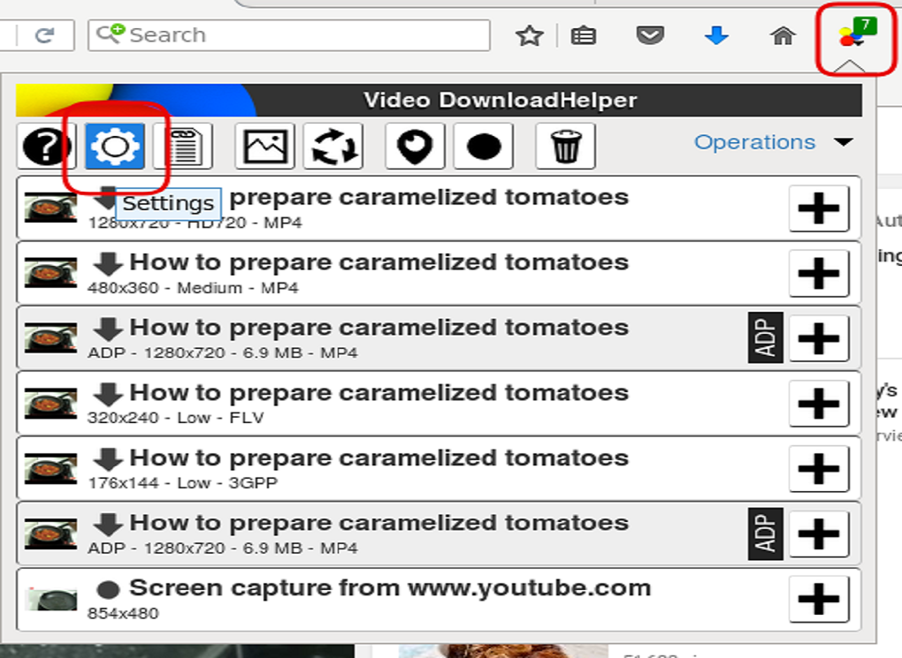

5 Video DownloadHelper
Video DownloadHelper – популярный инструмент для загрузки и сохранения видеороликов с YouTube и подобных ему сервисов. Этот инструмент способен захватывать не только видео, но и звуковые файлы, а также изображения, причем для компьютеров с разными операционными системами, включая Linux.
Нередко пользователи встречаются с непонятной ошибкой: во время попытки скачать видео выходит сообщение: Companion application required или This operation requires an external application to be completed. То есть, системе для завершения операции требуется некое дополнение.
Пугаться при появлении такого уведомления не стоит. Просто не все операции Video DownloadHelper моугт быть выполнены в рамках браузера. Для выполнения и завершения операции требуется внешняя программа, которая и называется Companion Application.
Собственно говоря, Companion Application – это внешняя надстройка, которая выполняет часть функций для сервиса Video DownloadHelper.
Возможности Video DownloadHelper
Также поддаются настройке многие другие элементы расширения, некоторые из них мы рассмотрим. Если нажать на кнопку «More…», вам откроется большое количество всевозможных настроек, некоторые из которых представлены ниже.
— BlackList – это удобная функция, позволяющая указывать приложению, что ему не следует обращать внимание на некоторые элементы страницы;
— Video Qualities – как выходит из названия, в данном разделе вы сможете настраивать качество видео, такие как: максимальное число вариантов качества ролика или форматы, которые вас интересуют;
— Smart Names – это функция, которая помогает использовать в качестве имени файла различные элементы страницы, с которой производится загрузка. Здесь вы можете установить откуда брать название для файла: с Url, с заглавия страницы или её содержимого;
— Gallery capture – предоставляет возможность указывать максимальное количество ссылок, обнаруженных мультимедиа файлов и другие настройки отображения галереи;
3.1.1 Функционал программы
Системные требования, необходимые для функционирования Video DownloadHelper
Для того, чтобы установить Video DownloadHelper для Яндекс Браузера, стоит убедиться в том, что данное расширение совместимо с вашим ПК и с инсталлированной версией обозревателя.
Системные требования данного расширения небольшие:
— Наличие актуальной версии Яндекс Браузера (либо не ниже 15 версии) или Google Chrome;
— 1 Гб оперативной памяти;
— Процессор от 1 ГГц рабочей частоты одного ядра (2-3- и больше ядер);
— Наличие свободного места на жестком диске (1 Гб для работы программы, больше – для загрузки файлов);
— Windows 7 и выше, Android 7.0 и выше.
Если ваш гаджет соответствует этим характеристикам, то с установкой, настройкой и использованием данного расширения проблем не возникнет.

3.1.2 Достоинства и Недостатки Video DownloadHelper
Расширение DownloadHelper для Браузера Яндекс имеет как преимущества, так и недостатки. Рассмотрим сначала преимущества дополнения для пользователей Windows и Андроид.
Среди плюсов Downloader Helper можно выделить:
1. Поддержку русского языка;
2. Возможность загрузить музыку и видео;
3. Скачивание потокового видео с различных онлайн-трансляций;
4. Работу с более чем 50 сервисами, такими как YouTube, Facebook, VK, Twitter, Vimeo, Nikovideo и другими.
Дополнительное приложение предназначено для записи на диск файлов, загружаемых из сети. Если сам Video DownloadHelper захватывает и готовит файлы для записи, то приложение создает каталог записи, потому что файлы видео, как правило, имеют большие размеры и браузер просто не в состоянии их обработать своими ресурсами.
Нередко такая дополнительная надстройка требуется для браузера Chrome, который работает быстро как раз из-за отключения обработки больших файлов. А ведь в большинстве случаев одновременно загружаются видео – и аудиоданные, которые еще нужно совместить в файле записи.
Вот этим и занимается Companion Application с помощью сборки ffmpeg – известного конвертера видео, склеивающего видео и звук вместе. После обработки большие файлы готовы к записи на диск, что и требуется пользователю.
Собственно говоря, в большинстве случаев, Video DownloadHelper справляется своими силами, вызывая приложение Companion Application при необходимости. Если сервис обнаруживает, что браузер не в состоянии справиться с большим файлом, он вызывает Companion Application автоматически.
Особенности Video DownloadHelper
Основными достоинствами этого расширения являются: Возможность загружать видео с большинства сайтов; Предоставляется выбор необходимых качеств роликов доступных для загрузки; Плагин поставляется бесплатно и не требует обязательной абонентской платы; Простой и функциональный интерфейс приложения; Удобные методы загрузки, присутствует как поочерёдная загрузка, включающая в себя закачку файлов один за другим, особенно актуально, когда у вас медленное интернет-соединение, так и обширная закачка, позволяющая загружать одновременно несколько файлов; Интерактивный значок в панели инструментов - в тот момент, когда расширение находит мультимедийный файл у него изменится значок. Как таковых недостатков у приложения нет, оно полностью выполняет возложенную на него задачу и активно развивается, совершенствуясь и добавляя новые и новые сайты, с которыми оно работает. Приложение изначально разрабатывалось под браузер Mozilla FireFox, поэтому использовать оригинальное расширение можно в нём, но, с недавних пор, такая же возможность появилась и у владельцев Google Chrome, которые смогут насладиться всеми функциями плагина.
Программы и средства скачивания видео
с Youtube и других сайтов Интернет
- All
- aTube Catcher
- YouTube Downloader HD
- Clipgrab
- Video DownloadHelper
- SaveFrom
- Ummy Video Downloader
- MassTube
aTube Catcher
для ПК с ОС Windows является главным образом загрузчиком YouTube , но он также работает для других популярных видеосайтов.
aTube Catcher
См.продолжениеYouTube Downloader HD
простая бесплатная программа для скачивания видеофайлов с популярного хостинга видео YouTube.
YouTube Downloader HD
См.продолжениеClipgrab
Это приложение позволяет конвертировать загруженные видео.
Clipgrab
См.продолжениеDownloadHelper
его задача - это загрузка видео и аудио файлов с сайтов. Данный плагин можно использовать практически для всех сайтов, что и делает его ценным.
Video DownloadHelper
См.продолжениеSaveFrom
это сервис, позволяющий скачивать мультимедийный контент с сайтов типа vk.com и youtube.com существуют также дополнения для браузеров для упрощения процесса.
SaveFrom
См.продолжениеUmmy Video Downloader
это программа для скачивания любого видео с YouTube.
Ummy Video Downloader
См.продолжениеИные способы скачивания видео
Иные способы скачивания видео
См.продолжениеСписок использованных источников
1. Программы для скачивания видео с любого сайта [Электронный ресурс] // Mydiv. – Режим доступа: URL: https://soft.mydiv.net/win/collections/show-Programmy-dlya-skachivaniya-video-s-lyubogo-sayta.html (дата обращения : 24.05.2020).
2. Программы для скачивания видео с любого сайта [Электронный ресурс] // VideoProgs. – Режим доступа: URL: https://videoprogs.com/ru/programmy-dlya-skachivaniya-video-s-lyubogo-sayta (дата обращения : 24.05.2020).
3. aTube Catcher для YouTube: Mp3, MP4, HD c YouTube [Электронный ресурс] // aTube Catcher. – Режим доступа: URL:http://forum.ru-board.com/topic.cgi?forum=5&topic=48308 (дата обращения : 24.05.2020).
4. Функционал aTube Catcher [Электронный ресурс] // aTube Catcher. – Режим доступа: URL:https://biblsoft.ru/windows/internet/downloaders/331-atube-catcher (дата обращения : 24.05.2020).
5. Youtube Downloader HD [Электронный ресурс] // Youtube Downloader HD. – Режим доступа: URL:http://zuxcel.com/youtube-downloader-hd/ (дата обращения : 24.05.2020).
6. Ummy Video Downloader для YouTube: Mp3, MP4, HD c YouTube [Электронный ресурс] // Ummy Video Downloader. – Режим доступа: URL: https://videodownloader.ummy.net/ru/ (дата обращения : 11.05.2020).
7. ClipGrab — программа для скачивания видео из интернета [Электронный ресурс] // ClipGrab. – Режим доступа: URL: https://komp.vellisa.ru/clipgrab (дата обращения : 11.05.2020).
8. Video DownloadHelper – для чего используется и как установить плагин [Электронный ресурс] // Video DownloadHelper. – Режим доступа: URL: https://tvoykomputer.ru/video-downloadhelper-dlya-chego-ispolzuetsya-i-kak-ustanovit-plagin/ (дата обращения : 11.05.2020).
9. В Чем Дело SaveFrom.net Вирус: Что Это Такое И Как Его Удалить [Электронный ресурс] // SaveFrom.net. – Режим доступа: URL: https://www.lifewire.com/what-is-the-savefrom-net-virus-4767587 (дата обращения : 11.05.2020).
10. Отзывы о Ummy Video Downloader [Электронный ресурс] // Ummy Video Downloader. – Режим доступа: URL: https://fb.ru/article/384335/otzyivyi-o-ummy-video-downloader-kak-polzovatsya-programmoy (дата обращения : 11.05.2020).
11. Как скачать видео с YouTube [Электронный ресурс] // Иные способы скачивания видео. – Режим доступа: URL: https://yandex.ru/q/question/computers/kak_skachat_video_s_youtube_f71656a5/?utm_source=yandex&utm_medium=wizard&answer_id=d6b2a617-8beb-4696-b9a7-4c30a2fe9e63 (дата обращения : 20.05.2020).
12. 10 универсальных сервисов [Электронный ресурс] // Иные способы скачивания видео. – Режим доступа: URL: https://lifehacker.ru/kak-skachat-video-bez-programm/ (дата обращения : 20.05.2020).
13. Как скачать видео с любого сайта [Электронный ресурс] // Иные способы скачивания видео. – Режим доступа: URL: https://umi.ru/blog/kak-skachat-video-s-lyubogo-sayta/ (дата обращения : 21.05.2020).